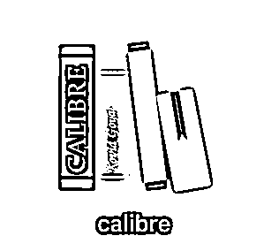

来源：https://kqubish8iq0.feishu.cn/docx/AKtEdmiFTonN2hxKDYZc9NdunUc
大家好，我是龙珠圈友飞掌柜，受到付费电子书这条风向标的启发，我最近接了找书项目的单子，6天变现了2400，感谢圈友启发，类似这样的风向标生财有很多，今天我把实操经验分享如下：
我运营公众号，做读书会，书友找到我，说能否帮忙找书，要求是PDF电子版，并给出了书单，从2023年往前，到1900年的书，一共5000本左右。
很明显，有一部分古书，剩下的书时间相对较近，我评估了下，应该多数能找到。于是接了这个项目，因为量大，费用是2.5-3.5元/本。
按照找书便捷性和速度排序，由高到低，分别是豆瓣、Z站、知识宝库、无名图书、其他渠道。
百度直接输入书名，第一条基本上是，如果不加“豆瓣”两个字，不一定会显示到第一条。
点击进去，是豆瓣读书页面，可以看到有PDF、mobi、epub等多种格式，收录了什么格式就会显示什么格式。
点击下载即可，注意：
1）并不是每种格式都能正常下载，经常因为各种原因部分格式不可下载。
2）有时候下载的文件并不是对应书籍，这个应该是豆瓣后台传书的时候有错误，这种情况去其他渠道找即可。
3）找书之后第一时间打开看下，是否内容符合，包括书名、作者、出版社、出版时间等信息，以免因为信息不对，导致客户验收不通过。
网址大家都知道，我推荐用客户端下载，第一稳定，第二库存较全，第三下载速度贼快，几百兆的文件只需要几秒钟，网页版可能得10分钟。
下载的时候看一下格式和大小，选择小格式下载，节省内存，因为我们要交付给客户的是PDF版本，之后要转格式，原格式小，转换后的格式也会小。
Z站目前找书每天20本，可以用邮箱多注册几个账号，以备用，基本上5个账号就能满足快速找书需求，1天至少100本。
https://book123.info/，好处是下载很方面，搜索库存大。坏处是24小时之内只能下载20本，有数量限制，且没有办法突破，因为这个网站不需要账号登陆，所以还不能通过切换账号的方式将下载数变多。
其他还有很多电子书免费网站，或者低价网站，生财不少圈友也有分享过，比如@Daemon的这篇【电子书网站大全】https://wx.zsxq.com/dweb2/index/topic_detail/412225128214828，在此就不一一举例，所有的都是工具，目的都是为了交付，大家选择最趁手的即可。
刚刚我演示的都是通过书名搜索，但有时候书名不准确，多一个字少一个字可能搜不到，或者简体字和繁体字有差别，我们会认为没有，其实书是有的，所以搜索的时候建议使用SSID和ISBN号
ISBN编号是国际标准书号(International Standard Book Number)的简称,是专门为识别图书等文献而设计的国际编号。 🌈专著出版是必须要有ISBN编号的,也就是说出一本专著,必须有书号。ISBN编号可以快捷有效的识别专著出版的地方、出版社、书名及版本、装订方式等。
SSID技术可以将一个无线局域网分为几个需要不同身份验证的子网络，每一个子网络都需要独立的身份验证，只有通过身份验证的用户才可以进入相应的子网络，防止未被授权的用户进入本网络。简言之，书的SSID相当于书籍的身份证。
在豆瓣读书等网站上基本都有，百度百科等也能搜到。

因此，建议使用ISBN直接搜，肯定是对应的书籍，非常准确。
由于我们多数下载的是mobi、epub、azw3格式，需要转换成PDF，建议使用calibre文件，可以转换十几种格式，且完全免费。当然，市面上还有很多其他软件，大家选择自己最熟悉的即可。


将下载好的书籍分成两个文件夹：有PDF文件、没有PDF但有源文件。上传到夸克网盘，并将对应链接和excel发给客户即可。
一般是通过百度网盘、夸克网盘、阿里云盘发送，看客户要求，我这边三者都能满足。当前客户要求的是夸克网盘。同时，之后有其他客户有书籍要求，相当于已经做了一部分书籍网盘化的需求，同时，搭建找书机器人，也是搜索网盘，数据库的工作也完成了部分。
如果大家有加入一些找书群，群内有机器人的话，找书会更快，可以发送书名或者IBSN号给机器人，基本上2秒回复，比如：
不过并不是每次机器人都能找到， 需要看机器人后台查找的库是什么，如果只是部署者的本地数据库，可能存量有限，如果联网库，找到成功概率更高。
先收费、后找书，即先收客户一部分押金，然后开始找书，交付给客户后，验收通过，结清尾款。一般我都会多送客户几本，或者量大稍微优惠，目的是为了下次客户有该项目还能找我。部分截图如下：
这个项目目前已经结束，我交付了800本，客户后期还有很多书要找，但同时也签署了其他机构合作，分析下原因，第一，可能我这边找的速度达不到他们的要求，第二，找机构签合同方便，而我这边因为没有自己的公司，因此无法对公签合同。
针对第一条，目前我已经搭建了找书团队，速度比之前提升好几倍，能带着大家赚点零花钱。
针对第二条，时机成熟，自己注册个公司，但因为目前该项目不足以支撑公司主营业务，所以用替代方案，即用朋友公司签合同，给朋友一些中介费。
有些人可能觉得，这项目能挣几个钱，我是这么看待的：
第一，这个项目适合小白，因为不用怎么动脑筋，有时间就行，同时项目资金是零投入；
第二，该项目工作量也不小，按照5分钟一本书计算，5000本书的工作量大约是25000分钟，417小时，每天找8小时，也需要52天，如果速度快，一个月差不多，按照3元每本，15000，其实和上班差不多的，甚至多于普通工作薪资待遇；
第三，如果有机器人辅助，或者本身搭建了书籍数据库，懂一些代码，组建了团队，效率会提升很多倍，5000本书可能一周就可完成，这样看，单位小时的收入高于市面上多数工作；
第四，该项目可以锻炼信息快速检索能力，这项能力是通用能力，无论主业还是副业，同样受益；
第五，电子书代找业务门槛低，不占用太多时间，可以作为自己众多项目之一，或者收徒快速上手项目，基本上1个小时就能学会（占用时间主要是利用工具）。
针对B端，其实有很多机构搭建电子书网站，有些是面向公众，有些是给内部员工，有些是政策要求，有些是整体规划，无论什么原因，还是有市场的；针对C端，某宝某多多上的电子书代找业务也有很多，如果有能力开网店，不耽误工作情况下，也是一个不错的副业渠道。
大家如有有人需要找书，可以合作一起做，按照工作量分担即可。
希望自己的实操分享给大家一些启发，以上。